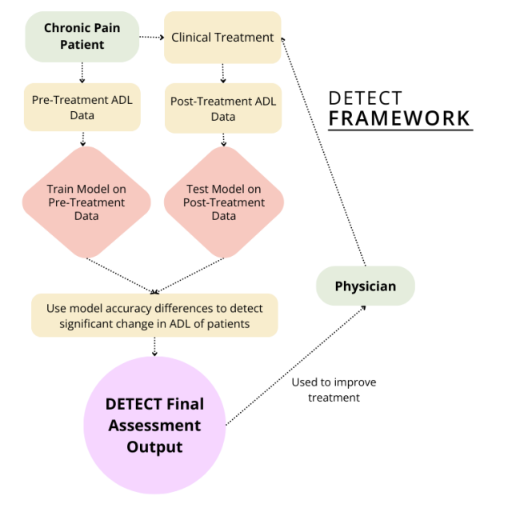
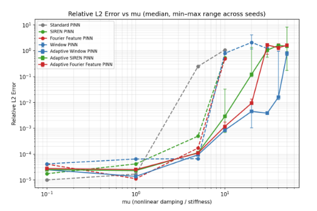
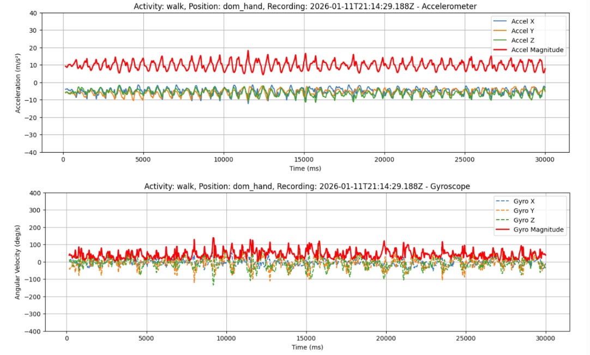

|
Stephen Yang
I'm a high school student at Lexington High School. I'm
interested in machine learning for healthcare, especially
models that learn from wearable sensor data.
Scholar
/
Github
|
|
Research
My current research focuses on human activity recognition
and physics-informed machine learning. * denotes equal
contribution.
|
|

|
DETECT: Data-Driven Evaluation of Treatments Enabled by
Classification Transformers
Yuanheng Mao*, Stephen Yang*, Lillian
Yang*, Ethan Shao*, Zihan Li
IEEE ICDM Undergraduate and High School Symposium,
2025 (Best Paper Runner-Up)
arxiv
/
code
An objective framework for evaluating chronic pain
treatment effectiveness using wearable sensor data and
transformer-based HAR models.
|
|

|
Evaluating Physics-Informed Neural Network Variants for
Nonlinear Dynamical Systems
Stephen Yang, Akshar Parmar, Eshan
Tangutur, Fatima Sotelo Huerta, Alvin Hu, Anthony Lai, and
Ekaterina Sarycheva
IEEE BigData High School Symposium, 2026
(proceedings TBA)
code
A study of physics-informed neural network variants for
the Van der Pol oscillator, plus an ablation of
time-domain decomposition methods to determine what best
improves model performance.
|
|

|
Cross-Position Human Activity Recognition
2025–2026
code
A Global Frame Transformation layer study on machine
learning model variants that maps wearable sensor readings
into a placement-independent frame, so activity
recognition works wherever the sensor is worn.
|
|